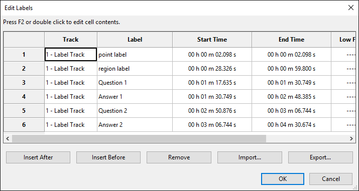
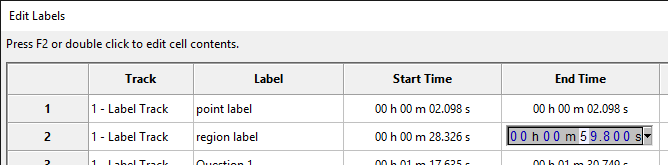
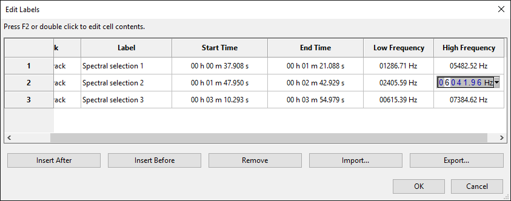

Labels Editor
launches a keyboard-accessible Labels Editor. This shows all the labels at once in a tabular view, similar to a spreadsheet. Each row represents a single individual label:
- 
- If you do not yet have a label track with labels, you can open Labels Editor where a row for a new label track will be available for editing.
- If you already have a label track with labels and the editing cursor is at one of those labels, Labels Editor opens with that label selected. Otherwise Labels Editor opens with the label to left of the editing cursor selected and moves the cursor to that label (or if the cursor is to left of the first label, it opens with the first label selected and moves the cursor to the first label). On closing Labels Editor, the cursor is placed at the label that was selected when closing the editor.
Use the Arrow keys on your keyboard to navigate easily left, right, up or down between the table cells and rows. Closing the editor with a label row selected selects that label in the label track (without opening it for editing). Pressing Space will then move the view to the start of that label and play the audio from the start of that label.
To open a cell for editing, use F2 or double-click. To confirm the edit, press Enter to move down into the same cell in the next label, or Tab to move into the following cell for the current label. Similarly, hold Shift and press Tab to move back to the previous cell for that label. Holding Ctrl and pressing Tab moves directly out of the grid and cycles forward through the buttons, and holding Ctrl and Shift and pressing Tab moves out of the grid and cycles backward through the buttons (use Ctrl nor Command for these key presses, even on Mac).
Opening the Start Time or End Time cell for editing lets you use Left or Right arrow keys to move between selected time digits, then Up or Down arrow keys to increment the digits. Alternatively you can type the number wanted for the selected digit. Labels Editor shows the selection format currently chosen in Selection Toolbar. To change the format temporarily to some other unit of time or to samples, audio CD frames or film frames, use the context key on your keyboard or click the downward-pointing arrow to right of the digits.
- 
Inserting and removing labels
Navigating into any cell in the row for that label (or selecting that cell with the mouse) selects that label for action by the following three buttons:
- Insert After: Insert a single label into the list after the selected label
- Insert Before: Insert a single label into the list before the selected label
- Remove: Remove the selected label without moving back any following labels. This command never removes the Label Track, even if no labels remain in that track.
After using either Insert button, type the label name, then Tab into and open the Start Time and End Time cells in turn to set the position of the new label.
Moving a label to a new label track: In the row for the label you want to move, open the cell under the "Track" column. Then select New...  , press Enter on your keyboard (or use the Label Editor's button), type the name of the new track then press Enter. This will move the label in that row to the new track. The new label track is now selectable in the Track cells in all rows.
, press Enter on your keyboard (or use the Label Editor's button), type the name of the new track then press Enter. This will move the label in that row to the new track. The new label track is now selectable in the Track cells in all rows.
Creating a new empty label track and editing its labels: Use either Insert button to add a new label row, then open the Track cell in that row and choose New...  and press Enter as above to allocate that label to a new track. It is often easiest to do this by selecting the top row then inserting before that row. The new row then remains selected after naming the new track, then you can Tab into the other fields as needed to name the first label and set its position.
and press Enter as above to allocate that label to a new track. It is often easiest to do this by selecting the top row then inserting before that row. The new row then remains selected after naming the new track, then you can Tab into the other fields as needed to name the first label and set its position.
Importing and Exporting labels
Import... and Export... buttons: These respectively import a labels text file or export all the labels to a text file (irrespective of which labels are selected). These buttons are equivalent to the File Menu commands for importing and exporting labels.
Labels with a Spectral Selection
If a label is created from a point or region in a Spectrogram track where Spectral Selection is enabled (or if a label is otherwise created when a low frequency and high frequency value are already stored in the project), the Low Frequency and High Frequency of that label is displayed in Labels Editor. If a frequency is undefined, it displays as a series of dashes.
The Low and High Frequency can be edited just like the Start Time and End Time, by selecting the label and pressing F2, or by double-clicking the cell. When the cell is open for editing, click the downwards-pointing triangle to right of the digits (or use the Menu key) to change between values in Hz and kHz.
After modifying either frequency value for one or more labels, click in Labels Editor then reselect the label to see the modified frequency range displayed in a Spectrogram track with Spectral Selection enabled.
- 
- Note: A frequency range already stored in a label cannot be further modified by Spectral Selection Toolbar or by clicking or dragging in the waveform. To change the stored frequency range, select and right-click the label (or use the Menu key) then choose "Edit..." to open the label in Labels Editor.